-
Simplification of Logic Circuits
Boolean algebra in logic circuits · Circuit Simulator
George Boole is the mathematician who helped establish modern symbolic logic and whose algebra of logic, now called Boolean algebra, is basic to the design of digital computer circuits.
Unfortunately, he died before the significance of his work was recognised.
Claude Shannon (died 2001), of MIT fame recognised how Boolean algebra could be applied to on-and-off circuits, where all signals are characterised as either “high” (1) or “low” (0).
He was an American mathematician and electrical engineer who laid the theoretical foundations for digital circuits and information theory, a mathematical communication model.
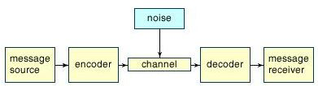 - His 1938 thesis put Boole’s theoretical work to use in a way Boole could never have imagined, giving us a powerful mathematical tool for designing and analysing digital circuits.
- Boolean algebra finds its most practical use in the simplification of logic circuits.
-
EXERCISE: Logic Gate Representations
Answer the following in relation to multiple-input logic gates
- For a Three input OR Gate the inputs are 0, 0, 0. What is the output?
- For a Three input NOR Gate the inputs are 0, 1, 1. What is the output?
- For a Three input NAND Gate the inputs are 1, 0, 1. What is the output?
- For a Two input EXOR Gate the inputs are 1, 1. What is the output?
- For a Three input NOR Gate the inputs are 1, 0, 0. What is the output?
Reducing Boolean Expressions
Reducing a Boolean expression to its simplest form means that the fewest gates will be needed to implement
If we translate a logic circuit’s function into Boolean form, and apply certain algebraic rules to the resulting equation to reduce the number of terms and/or arithmetic operations, the simplified equation may be translated back into circuit form for a logic circuit performing the same function with fewer components

Therefore, if there is a Boolean expression to be implemented as a circuit and the equivalent function may be achieved with fewer components, the result will be
- increased reliability
- decreased cost of manufacture
The expression AB + BC(B + C) can be simplified by applying the Laws of Boolean Algebra as follows:
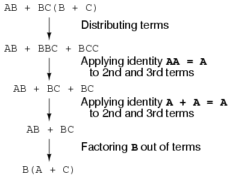
The final expression, B(A + C), is much simpler than the original, yet performs the same function.
EXERCISE Use the laws of Boolean Algebra to simplify:
1. Q = (A+B).(A+C) 2. (A'+B)(A+B) 3. AC'+ABC' 4. AB'D+AB'D'Deriving Boolean Expression from a statement
PROBLEM STATEMENT: If it is dark and a motion sensor detects a person on the front porch, or if the switch is on, then turn on the porch light
POSSIBLE SOLUTION:
Here, there are 3 INPUT variables: INPUTS:
- A sensor that detects dark (d)
- A sensor that detects motion (m)
- Determine if the switch is on (s)
OUTPUT: A switch to turn on/off the porch light (L)
EXERCISE: Create the truth table for above scenario
-
Binary Conversions
Binary is a base 2 number system that was modified by Gottfried Leibniz to create today binary system
- A binary code represents text, computer processor instructions, or any other data using a two-symbol system
Binary numbers are important because using them instead of the decimal system simplifies the design of computers and related technologies.
Binary is clearly seen with IP addressing (where an IP is a numeric identifier that represents a computer or device on a network)
- The importance of understanding binary as a computer science student is necessary as you need to know the technical details behind IP addresses in order to recognise wider possibilities in managing a network.
EXERCISE: Using the notes provided or using an alternative method of your choice:
Where d=decimal number base and b=binary number base
- Convert 1584(d) to binary
- Convert 543(d) to binary
- Convert 10010011(b) to decimal
- Convert 101110(b) to decimal
-
Use of Logic.ly
Logic circuit simulators can simulate electronic logic gates in an interactive environment on your computer. Such environments are often used to design circuits before implementing them with real electronic components
One such is Logic.ly where users can design circuits quickly and easily with a modern and intuitive user interface with drag-and-drop, copy/paste, zoom & more
- An alternative simulator is boolr.me (I’ve personally only used Logic.ly)
EXERCISES Using Logic.ly
Exercise 1: Click here to open the Logic.ly Simulator demo
- Add two Toggle Switches
- Add an AND gate
- Connect the two switches to the two inputs of the AND gate (click and drag from the connector circles)
- Add a lightbulb, connecting the output from the AND gate to the lightbulb
- Experiment with the AND truth table
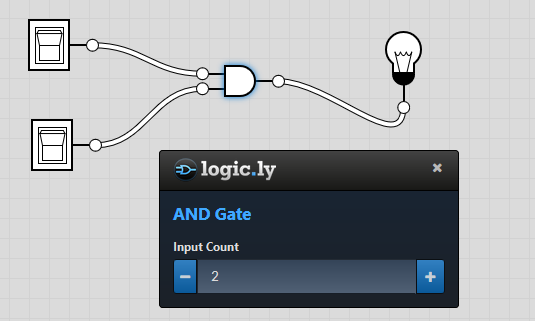

Exercise 2: Use the simulator to set up the following
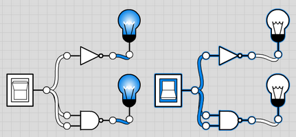
- What does this circuit set up demonstrate? What's happening to the inputs?
Exercise 3: What do the following circuits represent?
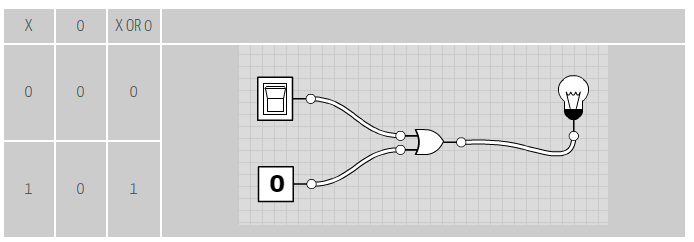

Exercise 4: Try replicating the function of both OR and XOR gates using only NAND gates
Boolean Algebra De Morgan's Law
- De Morgan's Law states that:
NOT(B OR C) is the same as NOT(B) AND NOT(C)Exercise 5: Show this De Morgan's Law is true by creating the corresponding truth tables (where the outputs should be identical)
Exercise 6: Demonstate this De Morgan's Law rule by setting up the circuit with the aid of logic.ly

Exercise 7: XOR gate output
Use the simulator to create a THREE inputs xor gate… - Is the output behaviour as you expect them to be?
Enjoy experimenting with Logic.ly
-
Hexadecimal Conversions
As you can see most computer hardware and software use a binary representation.
- Longer binary numbers are what computers use at the hardware level.
- However, they can be very difficult to parse by a human being
We humans use power of 2 representations like octal and hexadecimal to read the binary representation in a more efficient and painless way.
Hexadecimal is used to denote colours in the “hex” colour scheme
- a scheme that most computer users are somewhat familiar with.
QUESTION If a number has k digits in hex, how many digits (bits) does it have in binary?
- ANSWER k/4 ... But think about why??
EXERCISE: Using the notes provided or using an alternative method of your choice:
Where d=decimal number base, b=binary number base and h=hexadecimal number base
- Convert 1764(d) to hex
- Convert 693(d) to hex
- Convert 10010011(b) to hex
- Convert 10111110010(b) to hex
- Convert 1B0(h) to binary (NOTE: a little more challenging. Recall the weighted positional notation/polynomial notation in converting binary to decimal and follow the same rules, replacing the 2^0 in the right position to 16^0 and so on. try it)
- If the colour yellow is a mix of the highest saturation of red and the highest saturation of green without any blue, what is the hex representation for the colour yellow?
- If Olive green is approximately half saturation of red and half saturation of green, what is the hex representation for olive green colour?
- What is the RGB colour code for the Hex representation of the colour blue?
A baker's dozen is D
-
Combinational Logic Circuits
The combinational logic circuits can be classified into various types based on the purpose of usage, such as - arithmetic & logical functions, - data transmission and - code converters.
Binary Arithmetic
In computers, arithmetic operations are performed inside the CPU by the ALU.
Arithmetic in binary is much like arithmetic in other numeral systems. Addition is completed using a component within the CPU called an adder
Function of an adder: add two binary numbers, output result
- Inputs: two bits (x,y) to add and one carry-in(Cin)
- Outputs: sum bit (s) and one carry out but (Cout)
Recall the possibilities for adding two binary numbers:
0 + 0 = 0 1 + 0 = 1 1 + 1 = 2 which is 10 in binary which is 0 with a carry of 1 1 + 1 + 1 (carry) = decimal 3 which is 11 in binary. In your calculation, write down one 1 and a carry of 1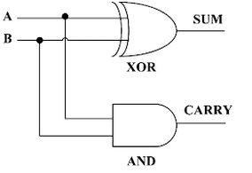
EXERCISE: Complete the truth table for the Half Adder

Full Adder
- The full adder is a three input and two output combinational circuit
- A circuit called a full adder takes the carry-in value into account
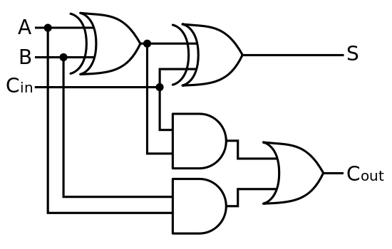
EXERCISE: Complete the truth table for the Full Adder
Remember: All of the more complex adder architectures are constructed from its basic building blocks such as Half Adder and Full Adder so it's important to understand the workings of these.
Again, experimenting with different circuit combinations will allow you become more familiar with the expected outputs of them...
-
Octal Conversions
Octal numbers are important because understanding their use is imperative to assigning file permissions in Unix.
- Octal is used as a shorthand for representing file permissions on UNIX systems.
- For example, file mode rwxr-xr-x would be 0755
Octal numerals can be made from binary numerals by grouping consecutive binary digits into groups of three (starting from the right).
How are base 2 and base 8 are related?
Because 8 is a power of 2, base-8 digits can be read off in binary and 3 base-2 digits can be read off in octal.
EXERCISE: Using the notes provided or using an alternative method of your choice:
Where d=decimal number base, b=binary number base, h=hexadecimal number base and o=octal number base
- Convert 176(o) to hex
- Convert 693(h) to octal
- Convert 10010011(b) to octal
- Convert 136(o) to decimal
- You want to assign your file OctalLab.txt rwx for user, group and others. Using octal numbers, what is the Unix chmod command for setting these permissions?
- You want to assign your file OctalLab2.txt rwx for user, r-- for group and -w- for all others. Using octal numbers, what is the Unix chmod command for setting these permissions?
-
Binary Arithmetic in an IP Address
The act of creating large numbers from groups of binary units or bits is called binary arithmetic.
- Learning binary arithmetic helps you understand how your computer sees IPs (or any numbers greater than one).
In binary arithmetic, each bit within a group represents a power of two.
Specifically:
- the first bit in a group represents 2^0 (NB: n^0=1)
- the second bit represents 2^1,
- the third bit represents 2^2, and so on
each successive bit in a group is exactly twice the value of the previous bit.
In binary math, the values for the bits ascend from right to left, just as in the decimal system you're accustomed to:
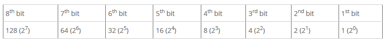
Now that we know how to calculate the value for each bit in a byte
creating large numbers in binary is simply a matter of turning on certain bits and then adding together the values of those bits.
So an 8-bit binary number 01101110 is therefore represented as:

Here, the values 64, 32, 8, 4 and 2 are all turned on
- So for the binary value in the table, 01101110, we add together 64+32+8+4+2 to get the number 110
How computers see IP addresses
an IP address is a 32-bit number subdivided into four bytes
- For example 204.132.40.155
This is how your computer sees that IP:
- 11001100.10000100.00101000.10011011
Why is each octet with an IP address in the range 0-255?
- Calculate the highest number that a byte can represent:
- If you turn on all the bits in a byte (11111111) and then convert that byte to a decimal number (128 + 64 + 32 + 16 + 8 + 4 + 2 + 1), those bits total 255.
Why is understanding this important to you?
- Network administrators must know technically what's going on in order to implement anything but the simplest network
- binary is a fundamental requirement for subnetting
- being able to look at IP addresses the way your computer does will help you do a better job as a network administrator
-
Solutions to some of the labs
EXERCISE: Use Boolean Algebra to simplify:
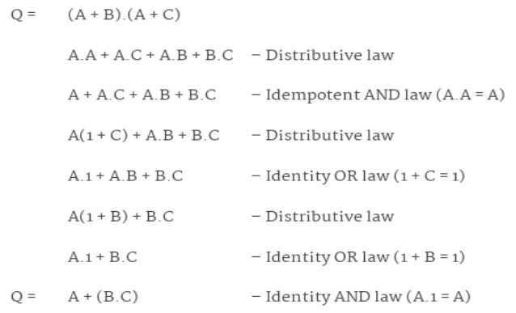
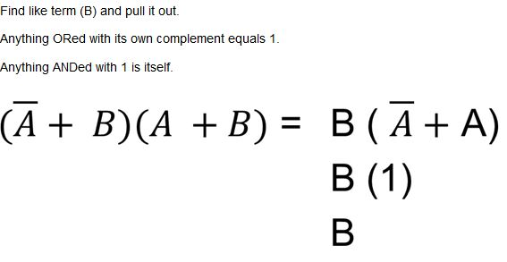
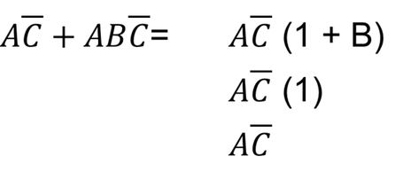
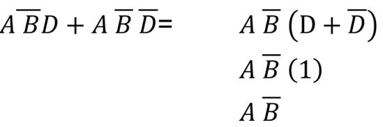
Deriving Boolean Expression from a statement
PROBLEM STATEMENT: If it is dark and a motion sensor detects a person on the front porch, or if the switch is on, then turn on the porch light
POSSIBLE SOLUTION:
Logic.ly
-
Binary Arithmetic
In computers, the same operations are performed inside the central processing unit by the arithmetic and logic unit (ALU).
Arithmetic in binary is much like arithmetic in other numeral systems. Addition, subtraction, multiplication, and division can be performed on binary numerals.
- base 2 arithmetic is easier than base 10 since you don't have to remember any tables for addition, subtraction, or multiplication
This lab will go through 1) Binary Addition 2) Binary Multiplication 3) Binary Subtraction including 2's Complement Method
1) Binary Addition
only have 2 digits to worry about, 0 and 1
line the two numbers up (one under the other), then, starting at the far right, add each column, recording the result and possible carry as we go
Here are the possibilities:
0 + 0 = 0 1 + 0 = 1 1 + 1 = 2 which is 10 in binary which is 0 with a carry of 1 1 + 1 + 1 (carry) = decimal 3 which is 11 in binary. In your calculation, write down one 1 and a carry of 1 These are the only possibilities in Binary AdditionWORKED THROUGH EXAMPLE: Perform binary addition on 11101 + 1100
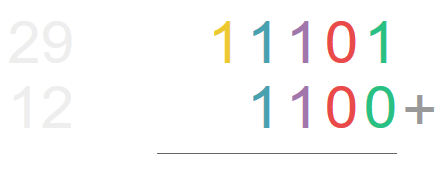
- Start adding the numbers, starting from the RIGHT side..
Starting at the right side of the above calculation: 1+0=1 0+0=0 1+1=1 and carry a 1 ... this is the first carry so this is what your arithmetic should look like, so far: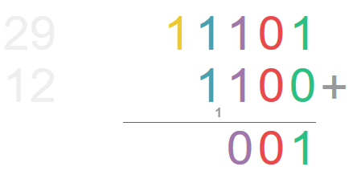
Continue adding until you reach the last carry on the left 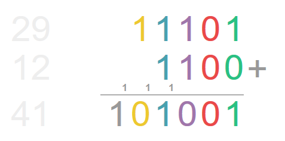
- It IS possible to add as many numbers as you wish, but the carry can get confusing.
- Consider adding Number1+Number2 and then, with your answer add Number3 and so on
- It IS possible to add as many numbers as you wish, but the carry can get confusing.
2) Binary Multiplication
- Remember multiplication is basically repeated addition.
- Again, we are only working with two numbers
Here are the only possibilities in binary multiplication:
0 * 0 = 0 1 * 0 = 0 1 * 1 = 1Easy peasy eh!
EXERCISES: Perform binary arithmetic on the following:
- add 1001101(b) to 1010000(b)
- add 100001101(b) to 1010001(b)
- multiply 1001101(b) to 1010000(b)
- if you wish, perform some more calculations based on whatever numbers you wish... converting decimal into binary and performing your arithmetic!
HINT: multiplication tip!!!!!!! If we want to multiply a binary number by another number which is a power of 2 then all we need to do is add the number of 0's representing that power to the right of the first number. eg. 8 is 2^3 which is 1000 in binary. 101101 x 1000 = 1011010003) Binary Subtraction
- Similar to binary addition, we will work through the numbers, column by column, starting on the far right.
- Instead of carrying forward however, we will borrow backwards
Here are the possibilities: 0 - 0 = 0 1 - 0 = 1 1 - 1 = 0 0 - 1 we can't do so we borrow 1 from the next column. This makes it 10 - 1 (decimal two minus one) which is 1. 10 - 1 = 1 11 - 1 = 1WORKED THROUGH EXAMPLE 1: Perform binary subtraction on 11101 - 1100
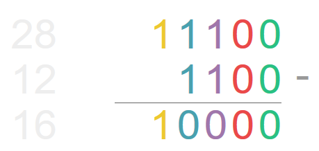
WORKED THROUGH EXAMPLE 2: How about 100 - 1
1 0 0 0 0 1 - #leading zeros not necessary _______________- Here we have 0-1 (zero minus one), and so we need to borrow on the top line
- In the first column we need to borrow a 1 but the second column is 0.
- Column 2 borrows a 1 from the third column and becomes 10 (or 2 in decimal)
0 10 0 #This is 10 is two in decimal 0 0 1 - _______________- Now we may borrow 1 from the second column (decreasing it from 2 to 1 or from 10 to 1)
0 1 10 #middle column decreased from 10 to 1 0 0 1 - _______________- Now column 2 is 1 and column 1 is 10 and we may continue as normal.
0 1 10 #middle column Decreased from 10 to 1 0 0 1 - #using the rules defined above 10-1=1 etc. _______________ 0 1 1 check your calculations using calculator if you wishSometimes you may have to do this over multiple columns but the process is the same.
How a computer subtracts: Two's Complement
The above example is the most convenient way for us to do binary subtraction by hand.
There is another approach however and this is the way that computers subtract binary digits.
This approach is called Two's Complement.
-
Binary Arithmetic
- So far, we’ve been working with all positive numbers
Now we need a way to represent signed numbers like -18(base10) or -34(base10)
One solution is to add an extra digit to the front of our binary number to indicate whether the number is positive or negative.
In computer terminology, this digit is called a sign bit.
Remember that a "bit" is simply another name for a binary digit
When our number is positive, we make our sign bit zero, and
- When our number is negative, we make our sign bit one. This approach is called the Signed Magnitude Representation
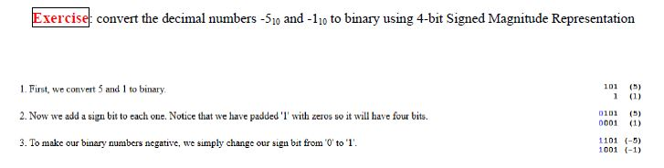
Since we are using 4-bit signed magnitude representation, we know the first bit is our sign and the remaining three bits are our number (Be sure that you do not mistake the number 1101(base2) for 13(base10)
The drawbacks of sign-magnitude representation are:
- There are two representations (0000 00002 and 1000 00002) for the number zero, which could lead to inefficiency and confusion.
- Positive and negative integers need to be processed separately.
Suppose we could represent signed numbers in such a way that all our computations could be completed using only addition. (This would allow our computer processor to perform all arithmetic operations with only addition circuitry.)
1's Complement
Representing a signed number with 1's complement is done by changing all the bits that are 1 to 0 and all the bits that are 0 to 1. Reversing the digits in this way is also called complementing a number
Again, the drawback is that there are two representations of zero, one being positive and one negative

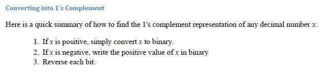
How a computer subtracts: Two's Complement
There is another approach however and this is the way that computers subtract binary digits.
This approach is called Two's Complement.
WORKED THROUGH EXAMPLE to compute 1000(b) - 11(b)**
Here, 1 is added to the 1's Complement representation
Step 1: Write the equation out, padding the bottom number with 0's
1000 0011 -Step 2: Invert the digits of the lower number
1000 1100Step 3: Add 1 b to the lower number (1100b + 1b = 1101b):
1000 1101Step 4: Add those two numbers together (using the method above) to get 10101 b
Step 5: Remove the leading 1 (and any 0's after it). You are left with 101b.
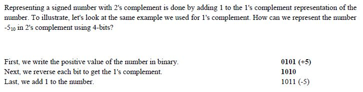